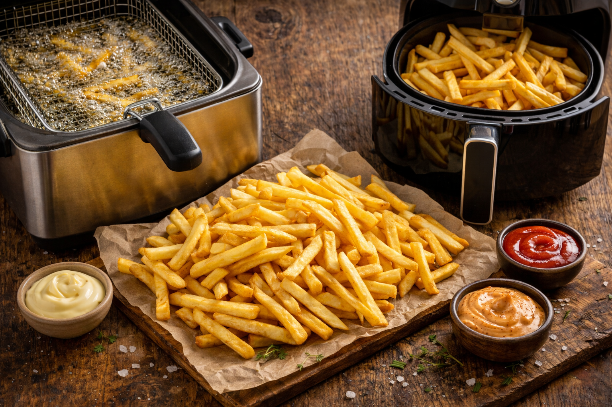

Des frites croustillantes à l’extérieur et fondantes à l’intérieur grâce à la double cuisson traditionnelle.
============================== PRÉPARATION DES POMMES DE TERRE ============================== 1. Éplucher les pommes de terre. 2. Couper en bâtonnets d’environ 1 cm. 3. Rincer à l’eau froide pour retirer l’amidon. 4. Bien sécher les frites. ============================== MÉTHODE TRADITIONNELLE (DOUBLE CUISSON) ============================== 5. Chauffer la graisse à 130°C. 6. Frire 5 à 6 minutes sans colorer. 7. Égoutter. 8. Laisser reposer 30 minutes. 9. Chauffer la graisse à 175°C. 10. Frire 2 à 3 minutes jusqu’à doré. 11. Égoutter et saler. ============================== VERSION AIRFRYER (DOUBLE CUISSON) ============================== 1. Préchauffer l’Airfryer à 160°C. 2. Mélanger les frites avec une cuillère d’huile. 3. Cuire 10 minutes. 4. Laisser reposer 5 à 10 minutes. 5. Augmenter la température à 200°C. 6. Cuire encore 8 à 12 minutes jusqu’à croustillant. 7. Saler et servir chaud. ============================== INFORMATIONS ET CONSEILS ============================== La frite, connue comme étant belge, fait pourtant débat. Une tradition situe son origine vers 1680 dans la vallée de la Meuse, tandis que certains historiens évoquent des pommes de terre frites vendues à Paris à la fin du XVIIIᵉ siècle. Ceci étant dit, même si je ne suis peut-être pas totalement objectif, la frite moderne est devenue un véritable symbole culinaire de la Belgique… et il faut bien l’avouer : elle y est souvent meilleure 😊. Le secret d’une frite parfaite repose sur le choix de la pomme de terre et la double cuisson. Les variétés riches en amidon comme la Bintje, l’Agria ou la Maris Piper permettent d’obtenir des frites croustillantes à l’extérieur et fondantes à l’intérieur. La cuisson dans la graisse de bœuf apporte une saveur authentique incomparable. Je vais être totalement honnête : cette méthode donne des frites délicieuses mais assez grasses. À consommer avec modération. La cuisson avec peu d’huile ou à l’Airfryer permet une alternative plus légère. La frite accompagne de nombreux plats mais peut aussi se déguster seule avec une sauce. En Belgique, il n’est pas rare d’en manger lors de festivités. 👉 Il existe différents modèles de friteuses adaptés à tous les besoins. Vous pouvez en découvrir via les liens recommandés dans la rubrique boutique du site.